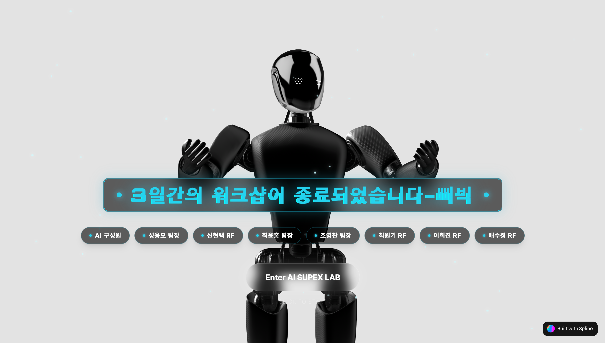
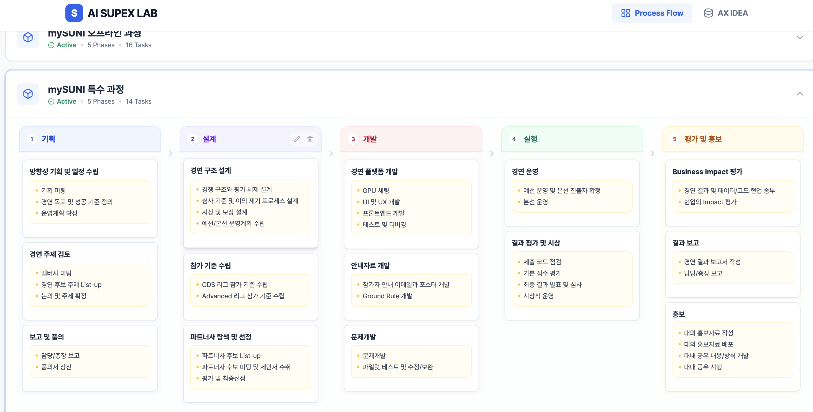
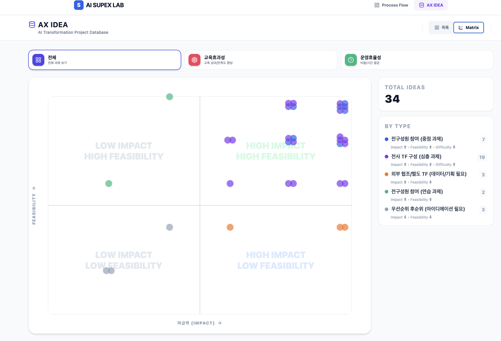

        <section class="slide orb-c" style="display:grid;grid-template-columns:1fr 1fr;padding:0;" data-n="[톤 실행 중심, 가장 구체적으로] 전략 5, 마지막입니다. 실행 플레이북이에요. 네 단계를 드릴 테니, 이건 진짜 내일부터 해보실 수 있습니다.

[청중 보기, 집중 확인] 1단계, 분해 — 업무를 단위로 쪼갭니다. 하나의 업무를 AI가 할 것과 사람이 할 것으로 나누는 거예요.

2단계, 배분 — 역할 경계를 정합니다. AI는 어디까지 자동으로 하고, 사람은 어디서 판단하나. 이 경계를 팀이 합의하는 겁니다.

3단계, 실행 — 작게 돌려봅니다.

[톤 강조] 30분 안에 내 업무 하나를 AI로 돌려보는 것. 결과가 완벽하지 않아도 돼요. '된다'는 감각을 주는 거예요.

4단계, 확산 — 성공한 분해 패턴을 팀에 공유하고 복제합니다. 팀의 표준으로 만드는 거죠.

[톤 자연스럽게] 교육 현장에서도 이 구조가 통했어요. AI Data Academy에서 초급은 온라인으로 기초를 배우고, 중급에서 실제 현업 프로젝트 — CCTV 이미지 분류나 안전 이상 감지 같은 — 를 직접 풀어봅니다. 2023년부터 누적 12,000명이 거쳐갔어요. 교육이 아니라 경험을 만든 거죠.

[킥] 시키면 저항이 됩니다. 경험하면 습관이 됩니다. 이 네 단계를 한 바퀴 돌리면, 시키지 않아도 물어보는 사람이 생깁니다.">
          <div class="layer-mid" style="background:radial-gradient(ellipse at 30% 50%,rgba(77,201,196,0.18) 0%,transparent 45%);"></div>

          <!-- 좌측: 제목 + 4스텝 세로 스택 -->
          <div style="display:flex;flex-direction:column;justify-content:center;padding:40px 4vw;position:relative;z-index:1;">
            <div class="tag">전략 4</div>
            <h2 style="text-align:left;font-size:clamp(26px,2.8vw,40px);margin-bottom:20px;">일을 <span class="em">쪼개고</span> 경험시켜라</h2>

            <div style="display:flex;flex-direction:column;gap:12px;">
              <!-- Step 1 -->
              <div style="display:flex;align-items:flex-start;gap:14px;background:rgba(77,201,196,.05);border:1px solid rgba(77,201,196,.2);border-radius:var(--radius);padding:16px 20px;box-shadow:0 4px 16px rgba(0,0,0,.4);">
                <span style="width:32px;height:32px;border-radius:50%;background:var(--teal);color:#000;font-family:'Inter',sans-serif;font-size:14px;font-weight:800;display:flex;align-items:center;justify-content:center;flex-shrink:0;margin-top:2px;">1</span>
                <div>
                  <div style="font-size:clamp(15px,1.3vw,19px);font-weight:700;color:var(--white);">분해 — 업무를 단위로 쪼갠다</div>
                  <div style="font-size:clamp(13px,1vw,15px);color:var(--g500);margin-top:4px;line-height:1.5;">하나의 업무를 <strong style="color:var(--teal);">AI가 할 것 / 사람이 할 것</strong>으로 나눈다</div>
                </div>
              </div>

              <!-- Step 2 -->
              <div style="display:flex;align-items:flex-start;gap:14px;background:rgba(212,165,116,.05);border:1px solid rgba(212,165,116,.2);border-radius:var(--radius);padding:16px 20px;box-shadow:0 4px 16px rgba(0,0,0,.4);">
                <span style="width:32px;height:32px;border-radius:50%;background:var(--copper);color:#000;font-family:'Inter',sans-serif;font-size:14px;font-weight:800;display:flex;align-items:center;justify-content:center;flex-shrink:0;margin-top:2px;">2</span>
                <div>
                  <div style="font-size:clamp(15px,1.3vw,19px);font-weight:700;color:var(--white);">배분 — 역할 경계를 정한다</div>
                  <div style="font-size:clamp(13px,1vw,15px);color:var(--g500);margin-top:4px;line-height:1.5;">AI는 어디까지 자동, <strong style="color:var(--copper);">사람은 어디서 판단</strong>하나</div>
                </div>
              </div>

              <!-- Step 3 -->
              <div style="display:flex;align-items:flex-start;gap:14px;background:rgba(212,165,116,.05);border:1px solid rgba(212,165,116,.2);border-radius:var(--radius);padding:16px 20px;box-shadow:0 4px 16px rgba(0,0,0,.4);">
                <span style="width:32px;height:32px;border-radius:50%;background:var(--copper);color:#000;font-family:'Inter',sans-serif;font-size:14px;font-weight:800;display:flex;align-items:center;justify-content:center;flex-shrink:0;margin-top:2px;">3</span>
                <div>
                  <div style="font-size:clamp(15px,1.3vw,19px);font-weight:700;color:var(--white);">실행 — 작게 돌려본다</div>
                  <div style="font-size:clamp(13px,1vw,15px);color:var(--g500);margin-top:4px;line-height:1.5;"><strong style="color:var(--copper);">30분 안에 내 업무 하나</strong>를 AI로 돌려보는 것</div>
                </div>
              </div>

              <!-- Step 4 -->
              <div style="display:flex;align-items:flex-start;gap:14px;background:rgba(77,201,196,.05);border:1px solid rgba(77,201,196,.2);border-radius:var(--radius);padding:16px 20px;box-shadow:0 4px 16px rgba(0,0,0,.4);">
                <span style="width:32px;height:32px;border-radius:50%;background:var(--teal);color:#000;font-family:'Inter',sans-serif;font-size:14px;font-weight:800;display:flex;align-items:center;justify-content:center;flex-shrink:0;margin-top:2px;">4</span>
                <div>
                  <div style="font-size:clamp(15px,1.3vw,19px);font-weight:700;color:var(--white);">확산 — 팀에 공유하고 복제한다</div>
                  <div style="font-size:clamp(13px,1vw,15px);color:var(--g500);margin-top:4px;line-height:1.5;">성공한 분해 패턴을 <strong style="color:var(--teal);">팀의 표준으로</strong> 만든다</div>
                </div>
              </div>
            </div>
          </div>

          <!-- 우측: 3 이미지 겹침 스택 -->
          <div style="display:flex;align-items:center;justify-content:center;padding:48px 3vw;position:relative;z-index:1;border-left:1px solid var(--line);">
            <div style="position:relative;width:100%;max-width:520px;height:600px;">
              <!-- 이미지 1 (뒤, 좌상단) -->
              <div style="position:absolute;top:0;left:0;width:85%;border-radius:var(--radius);overflow:hidden;box-shadow:0 8px 32px rgba(0,0,0,.6),0 0 0 1px rgba(255,255,255,.06);transform:rotate(-1.5deg);z-index:1;">
                
              </div>
              <!-- 이미지 2 (중간, 우측) -->
              <div style="position:absolute;top:180px;right:0;width:88%;border-radius:var(--radius);overflow:hidden;box-shadow:0 8px 32px rgba(0,0,0,.6),0 0 0 1px rgba(255,255,255,.06);transform:rotate(1deg);z-index:2;">
                
              </div>
              <!-- 이미지 3 (앞, 좌하단) -->
              <div style="position:absolute;bottom:0;left:10px;width:80%;border-radius:var(--radius);overflow:hidden;box-shadow:0 12px 40px rgba(0,0,0,.7),0 0 0 1px rgba(255,255,255,.08);transform:rotate(-0.5deg);z-index:3;">
                
              </div>
            </div>
          </div>
        </section>
